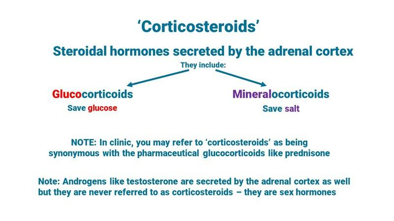

Original Blackboard item · _7758446_1
In this lesson, we will start understanding the stress access. When we are dying of dehydration or of hypoglycaemia, there is a cascade of hormones that ultimately results in the adrenal cortex secreting the stress hormones. Some of those are termed corticosteroids, and others include noradrenaline. The Corticosteroids include the GLUCOcorticoids which save glucose and the MINERALcorticoids that save salt. These hormones are so valuable in times of stress that they are the obvious choice to mimic in a pharmacological sense.
Please take time to understand this overview of the corticosteroids before getting into the lessons for this chapter.

Figure 3.1 : Corticosteroids - The Steroidal hormones secreted by the adrenal cortex
[15.12] Before I begin, I think it's best that you understand that sometimes people will say, oh, I've had to be on steroidal treatment for a while now. [26.68] Normally they're not going to be saying that they're on steroidal treatment if they're on the anabolic steroids, [34.28] such as testosterone and its analogues. [37.28] What they are saying is that they're on an anti-inflammatory steroid, and those anti-inflammatory steroids are similar to our own cortisol. [50.76] And throughout this upcoming discussion, [53.76] we're going to be talking about cortisol being one of the glucose corticosteroids that are released from the adrenal cortex. [65.84] And when we talk about medications that are Cortical aids. [71.52] The ones that you'll have to remember are going to be the prednisone and also the prednisolone. [77.96] So in this upcoming discussion, remember that cortisol is a glucocorticoid. [85.28] It's released from the adrenal cortex. It's a steroidal hormone that is a very potent stress hormone. [94.84] And when our client is on prednisone or prednisolone they're on a medication that mimics the glucocorticoids. [107.04] This is a diagram of the adrenal gland. The general shape of the right adrenal gland is similar to this. [115.32] And the left adrenal gland is much smaller, much flatter without that peak. [121.12] That's seen in this diagram. The adrenal glands are quite small. [126.20] They're only about the size of your thumbnail, and they weigh about four grams each. [134.08] But they do have an extensive blood supply. [137.56] The adrenal gland includes the adrenal cortex, which is the outside of the gland, and that adrenal cortex is going to secrete the steroidal hormones. [151.08] And those steroidal hormones that it's going to secrete include aldosterone. [156.84] The salt saver that's a mineralocorticoid is the salt saver. [162.72] They include cortisol, which is a glucocorticoid glucocorticoid. [170.04] It saves glucose. And they include the androgens or the testosterone and its analogues. [178.28] So the adrenal cortex secretes androgens, especially in females. [185.56] There's a significant portion of the androgens that females have are secreted from the adrenal cortex. [194.32] And the other portion of the adrenal gland is the adrenal medulla. [199.48] And the adrenal medulla is a portion of the autonomic nervous system. [204.76] It produces the nor adrenaline. Let's get a bit of a picture of the stress axis. [212.40] This is the hypothalamus pituitary adrenal axis. [216.48] When the hypothalamus gets the signal that some sort of a stress exists. [221.52] Doesn't really matter what type of stress that is. [224.40] But the stressor registers at the hypothalamus and the hypothalamus responds with corticotropin releasing hormone. [232.96] And it goes down to the pituitary gland through the hypothalamus pituitary portal venous system. [239.88] And there it prompts the pituitary to release Acth in the bloodstream. [246.20] And the Acth goes out into the bloodstream and then finds the receptors on the adrenal cortex. [254.52] And that prompts the release of the glucocorticoids like cortisol and the mineralocorticoid like aldosterone. [263.28] The hypothalamus relies on the adrenal cortex to help out in a stressful situation. [269.64] Since the mineralocorticoid is save salt, waste, potassium, and in the process of saving the salt, Save water. [279.16] What kind of stressful situations would it be good for? [283.40] Well, it'd be good for times when there's too little volume in the blood so somebody is dehydrated or somebody is having an anaphylactic shock. [295.68] Uh, any type of of a decrease in the blood volume. [301.28] Those are situations in which the mineral porticos are going to be very valuable. [308.00] So if you had a client with a problem involving excess amounts of mineralocorticoid, we would be saving too much salt and therefore too much water. [320.24] The person would be bloated, they'd have hypertension, they'd have too much volume. [325.48] If another client had deficiencies in the mineralocorticoid, they wouldn't be saving their salt or their water. [334.20] And as a result, there'd be too little volume. A form of hypokalaemia.
The type of ‘steroid’ that a person with severe asthma would be on would be one of the corticosteroids, more specifically a glucocorticoid like prednisolone. These decrease the inflammatory response. Cortisol is a primary glucocorticoid in the body Cortisol is an anabolic steroid In a stressful situation, the adrenal cortex secretes cortisol and other glucocorticoids to save glucose and aldosterone and other mineralocorticoids to save salt. A significant portion of the androgens in women are secreted from the adrenal cortex as well, but these are termed sex hormones, not corticosteroids. Noradrenaline is also secreted from the adrenal cortex in a stressful situation Finish ? Retry ? Please choose the statement(s) that is/are correct. Untitled Multiple Choice Drag the words into the correct boxes Untitled Drag the Words